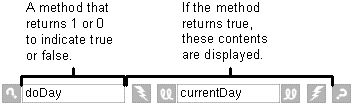
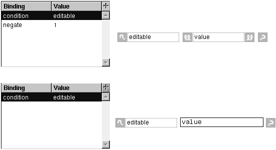

Table of Contents
Table of Contents
 Previous Section
Previous Section
Table of Contents
Previous Section
Select the WOConditional.
Double-click a variable in the variables browser.

A WOConditional displays its contents only if a particular condition is true. WOConditional's main attribute is condition. If condition is 1 (true), the WOConditional's contents are displayed. If condition is 0, the contents aren't displayed. condition can be bound to a variable or to method that returns the 1 or 0 value. The values self or nil also work in place of 1 or 0.
A WOConditional is like an if-then statement in a structured programming language. It tests to see if its condition is true, and if so, it displays its contents. If the condition is false, it displays nothing.
Many times, you want an "else" clause as well; that is, "if the condition is true, display this text; if not, display this other text." In such cases, you can make use of another WOConditional attribute: negate. If negate is 1, it means that the condition is negated after it is evaluated. Thus, if negate is 1 and condition returns 1, the contents are not displayed. To create an if-then-else style of conditional contents, do the following:
The example below is from a component named ReadWriteString. This component lets you set whether a displayed string is editable using the variable editable. If editable is 1, the component displays the WOTextField contained in the second conditional. The WOString from the first conditional is not displayed because the first conditional negates the value in editable. If editable is 0, the WOString is displayed but not the WOTextField.
